8. Rectifying Raster Data
Georeferencing also known as Rectification is a process of defining the real world location of a set of data. In GIS, when data from different sources need to be combined and then used, it is important to have a common referencing system.
This is used in both vector and raster GIS data. Reference information can come from several sources such an existing reference map, GPS readings, etc; this commonly referred to as Ground Control Point or GCP. Most georeferencing tasks are undertaken either because the user wants to produce a new map or because they want to link two or more different datasets together by virtue of the fact that they relate to the same geographic location.
We will use the Georeferencer Plugin in QGIS to reference rasters to geographic or projected coordinate systems by creating a new raster.
8.1. Creating a new project
1. Open QGIS and create a new project. In the menu, select
Project  New.
New.
2. Open and click the Coordinate Reference System (CRS) tab. Set the following options.
In the Coordinate Reference System, type in the Filter
PRSand choosePRS_1992_UTM_Zone_51N - ESRI:102457.

8.2. Loading QuickMapServices and Enabling the GDAL Georeferencer
{kind=link}
{kind=link}
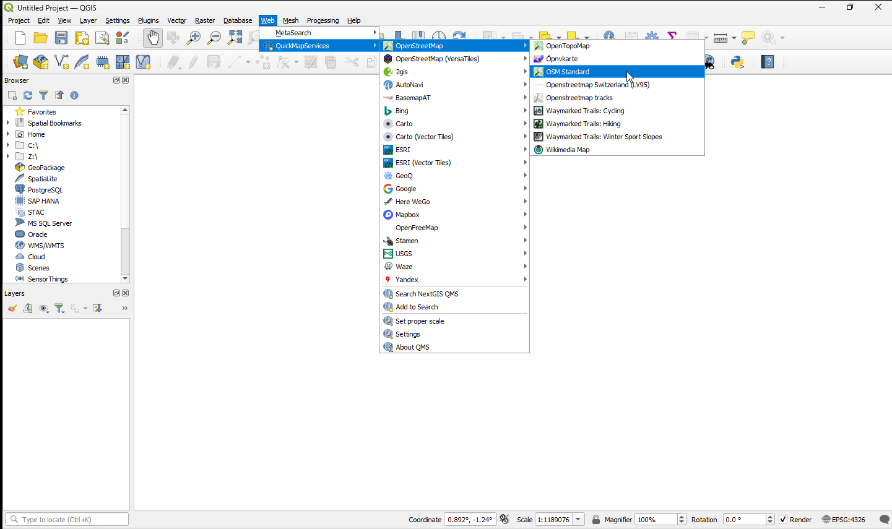
{kind=link}
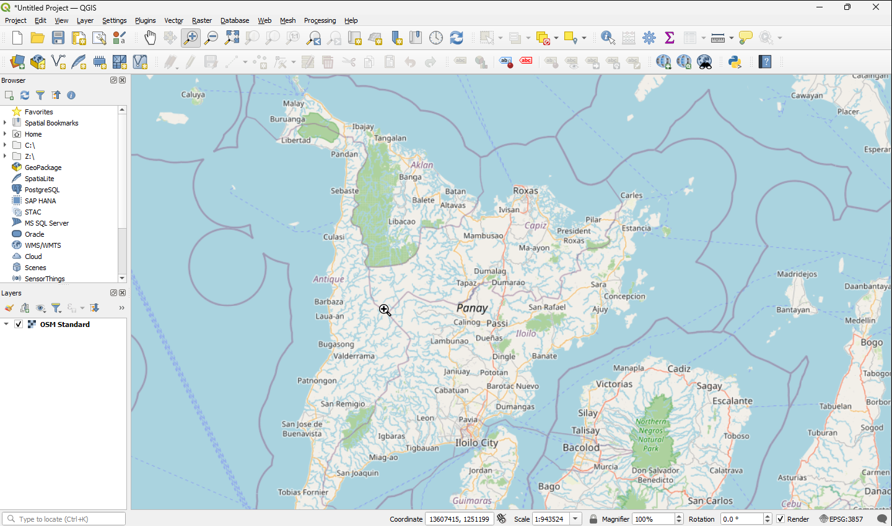
Open the
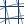
Georeferencer window from Layer in the Menu Bar.
{kind=link}
{kind=link}
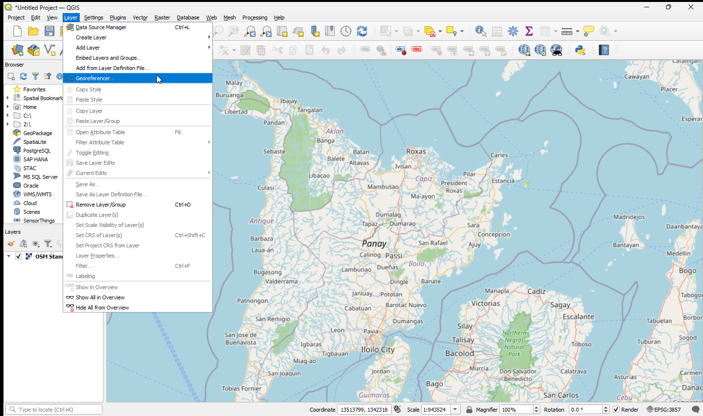
{kind=link}
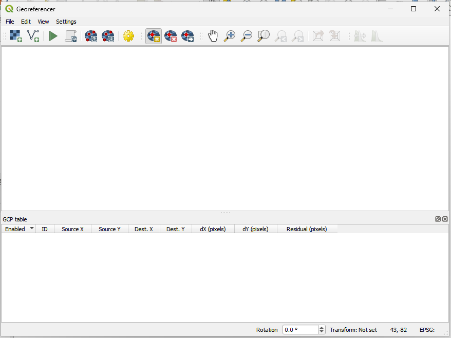
8.3. Georeferencing image
8.3.1. Load the unreferenced image
1. From the opened Georeferencer window click Open Raster to add your unrectified raster.
{kind=link}
{kind=link}
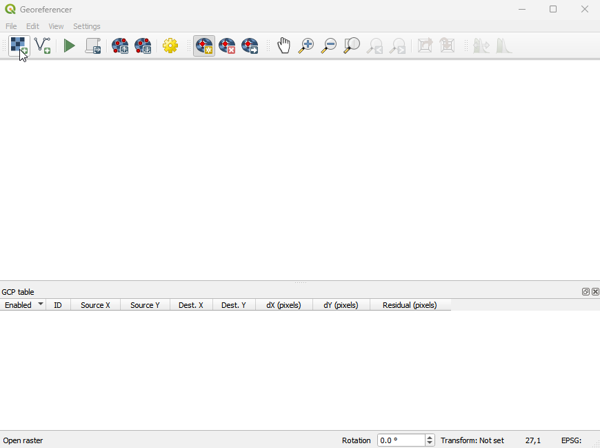
2. A new window will appear, then go to your Raster data directory.
Select the 2523-Roxas.jpg image, click Open.
{kind=link}
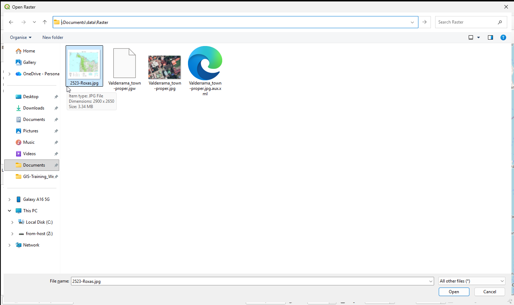
3. The raster will be loaded on the Georeferencer canvas. We will be rectifying a the upper part the portion on Antique as shown on the ungeoreferenced topographic map.
{kind=link}
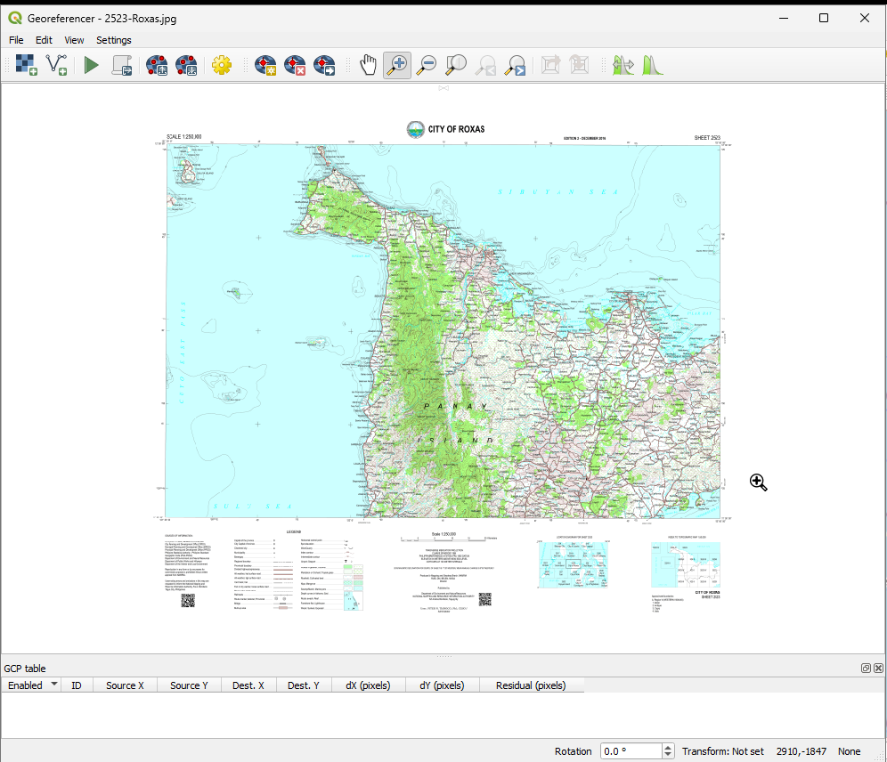
The raster will show up in the main working area of the dialog. Place the georeferencer side-by-side with the main map canvas displaying OpenStreetMap and adjust to similar zoom levels. Once this is ok, we can start to enter reference points.
{kind=link}
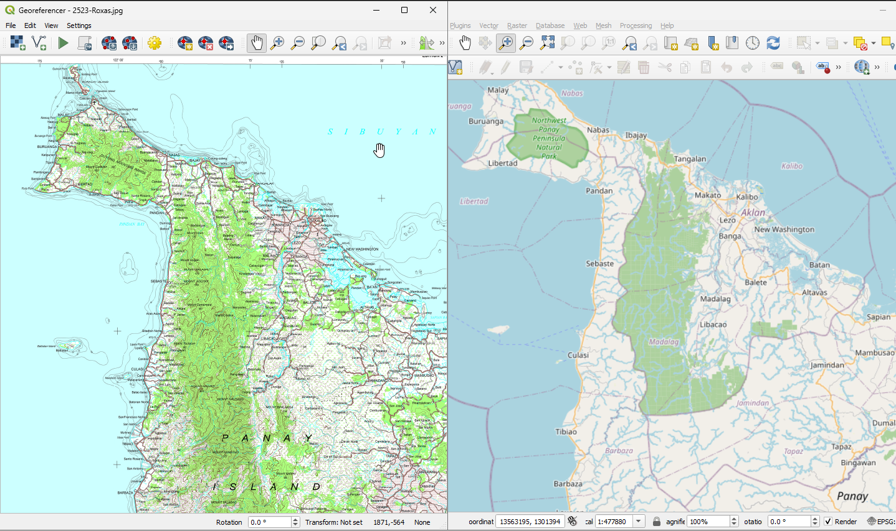
Loading the OpenStreetMap as base layer from the QuickMapServices –> 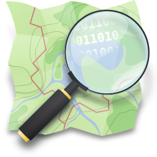Browser and Layers panel to make the Map View/Canvas a bit bigger.
{kind=link}
8.3.2. Add control points
1. Using the 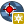
{kind=link}
{kind=link}
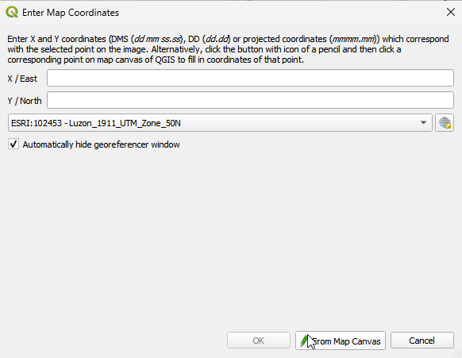
Tip
When selecting GCPs, it is best to choose points from across the image, balancing the distribution as much as possible; this will increase the positional accuracy. Since we are using the prominent features like roads and coastline, make sure that they are similarly aligned or positioned with the reference map such as OpenStreetMap.
{kind=link}
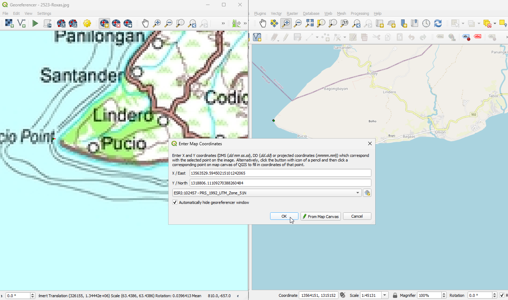
2. Continue entering points. You should have at least 4 points, and the more coordinates you can provide, the better the result will be. There are additional tools on the plugin dialog to zoom and pan the working area in order to locate a relevant set of GCP points.
{kind=link}
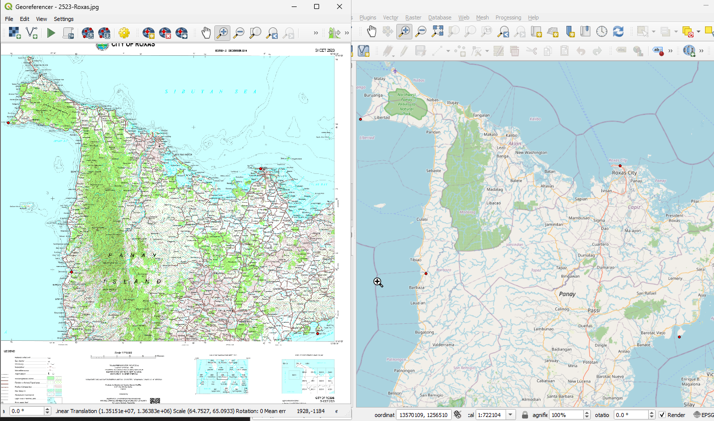
Note
The points that are added to the map will be stored in a separate text file
([filename].points) usually together with the raster image. This allows us
to reopen the Georeferencer plugin at a later date and add new points or
delete existing ones to optimize the result. The points file contains values
of the form: mapX, mapY, pixelX, pixelY.
You can use the Load GCP Points and Save GCP Points buttons to manage the files. Within the GCP table you can click on a column header and therewith enable e.g. numerical sorting. The GCP list is automatically updated.
8.3.3. Defining the transformation settings
After completing the selection of GCPs, we will define the transformation settings for the georeferencing process. Various options are available and the determination of the appropriate settings will depend on the source of input data, number of GCPs and the ultimate objective of the exercise.
Transformation type - Depending on how many ground control point you have captured, you may want to use different transformation algorithms. Choice of transformation algorithm is also dependent on the type and quality of input data and the amount of geometric distortion that you are willing to introduce to final result.
Resampling method - this is the process of geometrically transforming digital images. Different resampling methods can provide varying degree of “image” quality of the output.
Compression - for very large images, you can define a compression option to reduce the file size.
Target resolution - the pixel resolution of the output raster.
Output Raster - the file name and type of the raster.
Target SRS - target spatial reference system or coordinate reference system.
To define the transformation settings, clic Transformation Settings icon. In the Transformation setting window, select the following options:
Transformation type - Helmert Resampling method - Nearest neighbhor Compression - DEFLATE Target resolution - keep it unchecked Output raster - 2523-Roxas_modified.tif Target SRS - ESRI:102457 - PRS_1992_UTM_Zone_51N
{kind=link}
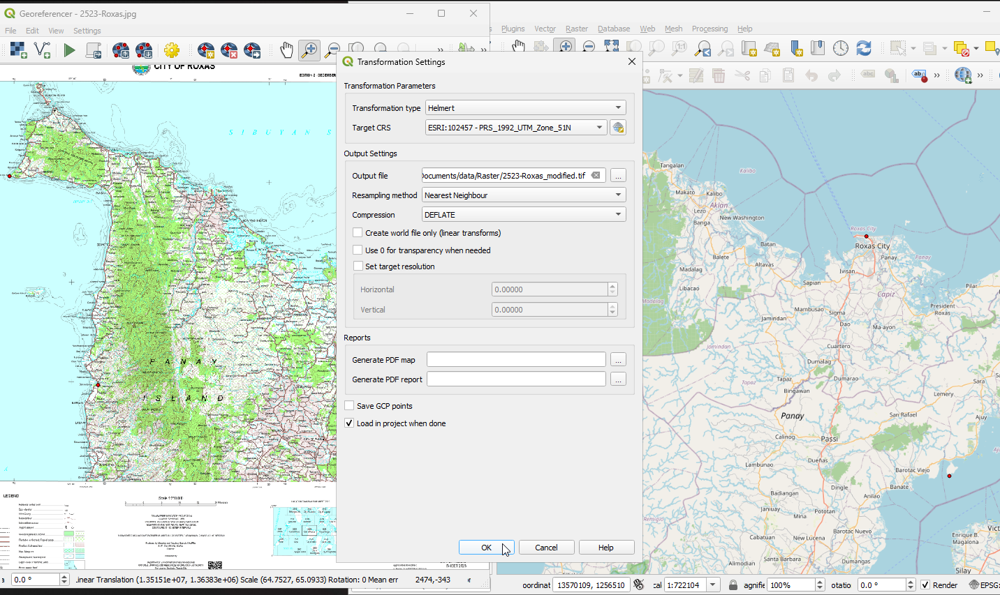
You can optionally generate a pdf map and also a pdf report. The report includes information about the used transformation parameters. An image of the residuals and a list with all GCPs and their RMS errors.
8.3.4. Starting the georeferencing
1. After all GCPs have been collected and all transformation settings are
defined, just press the button  Start georeferencing (the third icon in georeferencer window, green triangle)to create the new georeferenced raster.
Start georeferencing (the third icon in georeferencer window, green triangle)to create the new georeferenced raster.
2. The georeferenced image should be loaded into your map canvass. If the output raster is misaligned, you can adjust the GCPs and repeat the process.
{kind=link}
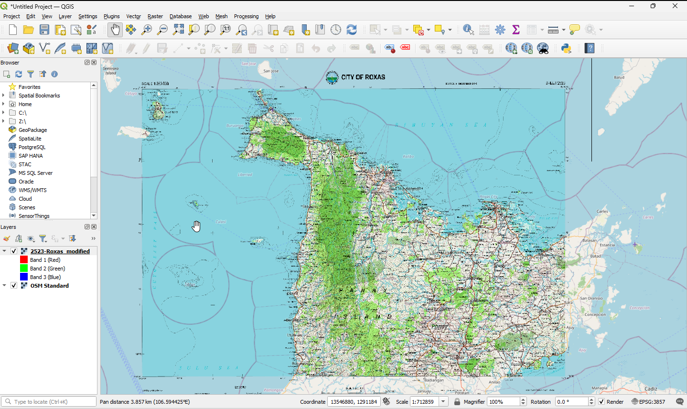
8.3.5. Additional Youtube Video
For the offline version of this video please click this link.
In this video a raster was used as a reference image instead of a vector. Like what we have above, an unrectified topographic map was used.